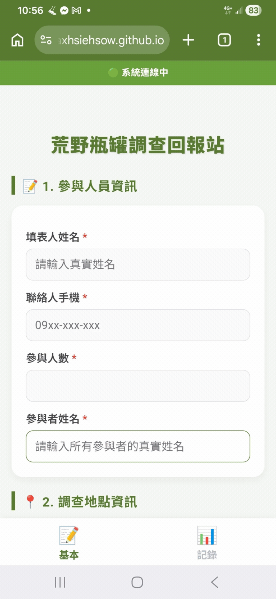
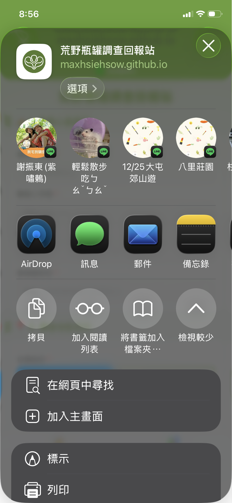
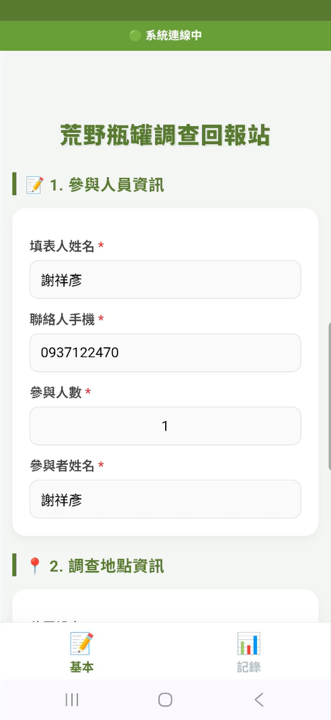

瓶罐調查程式操作手冊
歡迎使用荒野瓶罐調查系統。本手冊將詳細指引您從系統安裝到現場實地調查、資料上傳的完整步驟。
調查方法標準化
- 每個海灘最多分4組調查（高潮帶左右岸、低潮帶左右岸）
- 每次記錄 20分鐘
- 沿著潮帶記錄寬度 2公尺 間的有條碼瓶罐
- 掃描條碼記錄每個瓶罐
目的：彙整瓶罐的數據及座標加以分析其密度、熱點、品牌及產地。
第一章：一般志工版操作流程
0 系統入口與安裝
荒野瓶罐調查回報站：https://maxhsiehsow.github.io/marine-survey/
建議將網頁「加到主畫面」安裝或建立捷徑，以獲得最佳的 PWA 全螢幕體驗。


1 參與人員資訊
請填寫人員姓名，利於後續統計及感謝。填寫一次即會自動留存，於參與人員調整時記得進行修改。

2 調查地點資訊
可用「自動定位」或「尋找樣點」兩種模式進行定位。
自動定位
定位於現地，不限設定的樣點，隨時隨地皆可於任意位置進行調查，系統會自動定位於該地的鄉鎮巿。
尋找樣點
於荒野預設的全台 121 個樣點進行調查。透過蒐集全台的瓶罐垃圾數據進行分析研究。可點選全台任一樣點或臨近的 3 個樣點進行調查。
提供導航服務： 選擇樣點後，系統可連動開啟 Google Maps 導航前往。
灘地與區塊選擇
- 灘地類型： 提供 5 種常見地形選項 (沙灘/泥灘/礫石灘/礁岩/消波塊海堤)，請以「超過 50%」的類型做為記錄標準。
- 調查區塊： 調查員面對海的方向，右側為右岸、左側為左岸。
- 高潮線為海水最大潮淹至的地方，通常堆積較多垃圾，建議優先挑選。
- 低潮線為當日的水線附近，通常垃圾較少。
- 如灘地狹窄，統一登錄為「高潮線」。
3 調查工具
調查計時
每個樣點調查時間為 20 分鐘。系統會捉取 GPS 座標計算調查距離。
發現大量垃圾？
調查結束後，若發現現場垃圾量超過一台小貨車的量，請協助點擊按鈕，連結至「環境部海岸髒亂通報系統」進行通報。近期回報 3 筆皆在一週內完成清理。
4 記錄與成果
調查核心區域。提供多種方式進行條碼記錄，下方圓餅圖會即時顯示目前的國家統計狀況。
掃描條碼記錄
對準條碼掃描，不分前後方向。請核對掃描出的條碼數字是否一致，一致按確定即可增加一筆記錄。
系統會比對這個瓶罐是否已有資料：有資料會顯示商品名稱；無資料會提示「發現未知商品」，可選擇另行建檔（交由專門夥伴處理）。
手動輸入記錄
如果條碼因磨損不完整，可手動輸入條碼「前 3 碼」進行國家別查詢（例如 471 代表台灣），確認無誤後再加入記錄。
批次輸入
如果條碼完全不完整，但量大且外觀可明確分辨出國家別，可下拉選擇常見國家別，填寫數量後一次批次加入。
復原記錄
如果新增錯誤，如重複掃瞄、算錯數量，可按「復原」鈕，系統會一次刪除最後面的一筆記錄。
5 成果上傳
20 分鐘計時到期時，畫面會跳出「時間到！」的通知提醒您結束調查並準備上傳資料。
距離與備註
系統會自動計算本次調查總距離（功能測試中），如果誤差過大，先預留了「修改」按鈕供手動編輯。
最下方的「其他記錄」欄位，任何認為值得記錄的內容都可以寫下（如在測試系統，請記得於此註記）。
照片上傳規範
⚠️ 極度強烈建議：點選相簿中的照片上傳，防閃退！（詳見實戰對策）
- 現場照片： 需包含環境照 1 張、人員合照 1 張。
- 熱點照： 垃圾密集處，最多 2 張。
- 特殊瓶罐照： 特殊品牌或罕見垃圾，最多 4 張。
完成記錄與上傳
按下「🚀 上傳資料至雲端」即會送出。（在顯示成功前，請勿關閉程式或螢幕）
收到上傳成功動畫後，資料除了個資外會自動清空，您可以繼續下一筆調查。
第二章：特殊狀況與實戰應對 (Best Practices)
海岸無網路？ (離線模式自動保護)
🔍 症狀：
上方狀態列顯示紅色「離線模式」。
✅ 應對：
請安心繼續調查。按下上傳時，資料會安全存入手機內部記憶體。當您回到市區或有網路的地方後，只需打開網頁，點擊畫面上方的「☁️ 立即同步」即可將資料補傳至雲端。
手機過熱 / 網頁頻繁閃退
🔍 原因：
海邊高溫曝曬，加上瀏覽器同時呼叫相機與 GPS 定位功能，極易造成手機記憶體耗盡而強迫關閉網頁 (閃退)。
⚡ 終極應對解法：
上傳照片時，「絕對不要直接在網頁內按拍照」。
請先跳出網頁，用手機原本內建的「相機 APP」拍好所有的照片，然後再回到回報站網頁，選擇 「從相簿上傳」。這樣做可以 100% 避免網頁閃退導致辛苦調查的資料遺失。
第三章：資深建檔版操作流程
建檔站入口
荒野瓶罐建檔站：https://maxhsiehsow.github.io/marine-survey/Builder.html
專為建立常見海廢商品庫所設計的版本。開啟後會自動於背景記錄發現座標（請允許位置權限）。
掃瞄建檔機制
點擊「掃描條碼建檔」，系統會自動判斷條碼狀態：
情況 A：全新商品
資料庫完全查無此條碼。提示：請協助建立全新檔案！
情況 B：無照片商品
已知商品名稱，但資料庫缺乏清晰照片。提示：請協助立即補拍！
情況 C：資料完整
已有資料與照片。若覺得原資料有錯或照片不清楚，可點擊「重新覆寫編輯」更正。
AI 辨識代填與建檔
- 上傳瓶罐照片：必須包含一張清楚的正面照，以及一張條碼清楚的背面照。
- 點選畫面上紫色的 「✨ AI 辨識代填 (支援簡繁轉換)」 按鈕。
- AI 會透過圖片分析，自動協助提供並填入「商品名稱」及「廠商名稱」。
- ⚠️ 辨識完成後：AI 難免有誤，請務必協助人工確認並修正可能的錯漏字。
- 確認無誤後，點選「確認上傳」。出現「建檔成功 / 新增圖鑑完成」即代表照片與資料已同步至雲端庫。